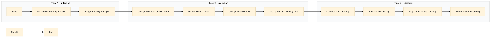

| Role | Steps |
|---|---|
| Franchise Manager | 1.1 1.2 |
| IT Specialist | 2.1 2.3 |
| Revenue Manager | 2.2 |
| Marketing Manager | 2.4 3.3 |
| Training Manager | 3.1 |
| Property Manager | 3.2 3.4 |
| Step | Name | Role | System | Input | Output | KPI | Dec? | Exc? | Pain Point / Risk |
|---|---|---|---|---|---|---|---|---|---|
| 1.1 | Initiate Onboarding Process | Franchise Manager | Oracle OPERA Cloud | Signed Franchise Agreement | Onboarding Plan | Less than 2 days | N | Y | Delays in obtaining necessary approvals from corporate headquarters. |
| 1.2 | Assign Property Manager | Franchise Manager | Oracle OPERA Cloud | Onboarding Plan | Property Manager Assignment | Less than 1 day | N | Y | Difficulty in finding a suitable Property Manager with Marriott experience. |
| 2.1 | Configure Oracle OPERA Cloud | IT Specialist | Oracle OPERA Cloud | Property Details | Configured PMS System | Less than 5 days | N | Y | Technical issues during system configuration. |
| 2.2 | Set Up IDeaS G3 RMS | Revenue Manager | IDeaS G3 RMS | PMS Configuration Details | RMS System Setup | Less than 4 days | N | Y | Integration challenges between PMS and RMS systems. |
| 2.3 | Configure SynXis CRS | IT Specialist | SynXis CRS | RMS System Setup | CRS Integration Complete | Less than 5 days | N | Y | Complexity in setting up CRS with multiple channels. |
| 2.4 | Set Up Marriott Bonvoy CRM | Marketing Manager | Marriott Bonvoy CRM | Property Details | CRM System Setup | Less than 3 days | N | Y | Data entry errors during initial setup. |
| 3.1 | Conduct Staff Training | Training Manager | Oracle OPERA Cloud, Knowcross HotSOS | Configured PMS System | Staff Training Completion Report | Less than 2 weeks | N | Y | High staff turnover during training period. |
| 3.2 | Final System Testing | IT Specialist | Oracle OPERA Cloud, IDeaS G3 RMS, SynXis CRS | Staff Training Completion Report | System Testing Report | Less than 1 week | N | Y | Unexpected system bugs during testing. |
| 3.3 | Prepare for Grand Opening | Property Manager | Oracle OPERA Cloud, Marriott Bonvoy CRM | System Testing Report | Grand Opening Plan | Less than 1 week | N | Y | Logistical issues with event planning. |
| 3.4 | Execute Grand Opening | Property Manager, Marketing Manager | Oracle OPERA Cloud, SynXis CRS, Marriott Bonvoy CRM | Grand Opening Plan | Grand Opening Report | Less than 1 day | N | Y | Low attendance or unexpected issues during the event. |
The process outlines the steps involved in onboarding a new franchise agreement and setting up a property within a Marriott full-service hotel using Oracle OPERA Cloud PMS.